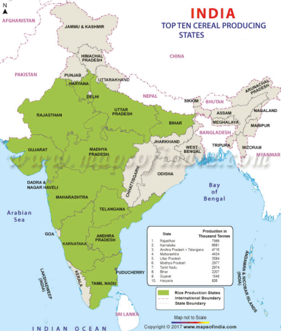

Temperature: Between 27-32°C
Rainfall: Around 50-100 cm.
Soil Type: Can be grown in inferior alluvial or loamy soil because they are less sensitive to soil deficiencies.
Jowar- Rain-fed crop grown in the moist areas with less or no irrigation.
Bajra- Sandy soils and shallow black soil.
Ragi- Red, black, sandy, loamy and shallow black soils. (dry regions)
Top Millets Producing States: Rajasthan , Karnataka , Maharashtra , Madhya Pradesh , Uttar Pradesh
Jowar: Maharashtra , Karnataka , Madhya Pradesh , Tamil Nadu , Andhra Pradesh.
Bajra: Rajasthan , Uttar Pradesh , Gujarat , Madhya Pradesh , Haryana.
These are also known as coarse grains, which have high nutritional value. Ragi is very rich in iron, calcium, other micro nutrients and roughage.
Jowar is the third most important food crop with respect to area and production.
National Agricultural Insurance Scheme, Initiative for Nutritional Security through Intensive Millets Promotion are examples of government’s efforts to support millet production.